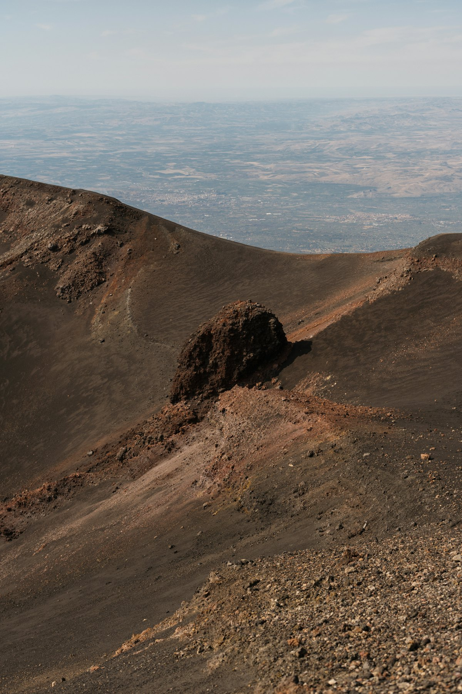
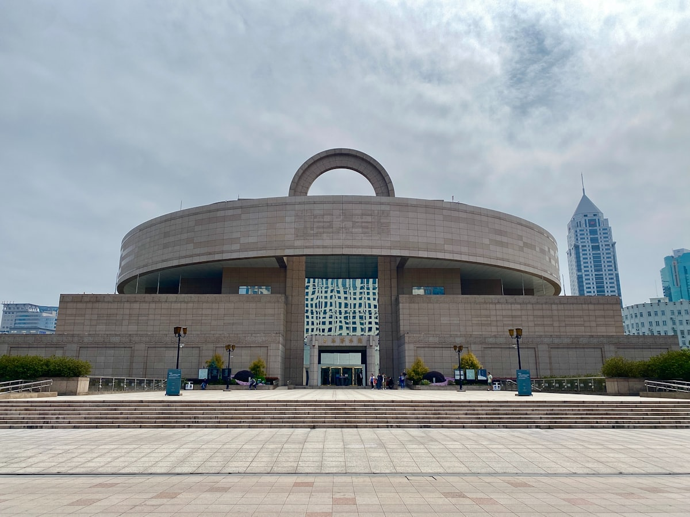
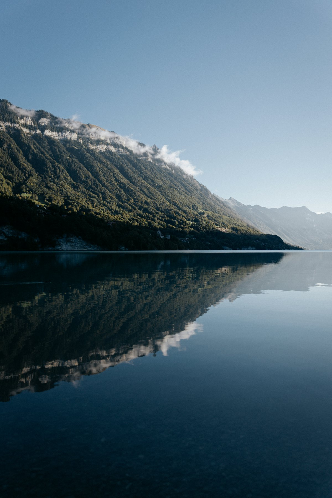
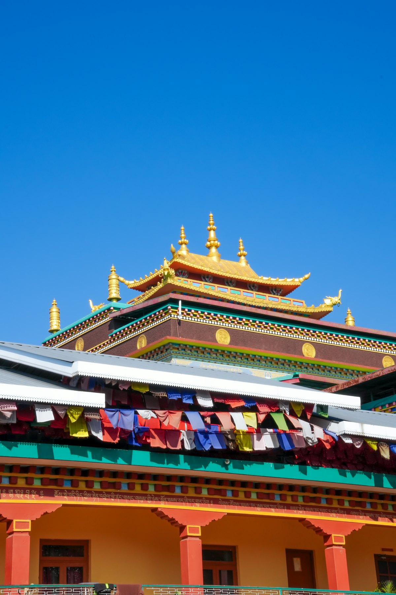

1核心结论
呼和浩特
→
希拉穆仁草原
→
响沙湾
→
成吉思汗陵
→
乌兰哈达火山
→
返程
🕐 10 天怎么安排最合理
内蒙古东西横跨 2400 公里，10 天走不完全域，但中西部环线足够把草原、沙漠、火山、皇陵一次集齐：从呼和浩特出发，北上希拉穆仁草原住蒙古包，西进库布齐沙漠的响沙湾玩沙看星，南下鄂尔多斯拜谒成吉思汗陵，再北上去乌兰察布看乌兰哈达火山群。既「逐水草而居」，也「驾长车踏破贺兰山缺」。
| 事项 | 结论 |
|---|---|
| 事项 | 结论 |
| 推荐方案 | 10 天 9 晚（呼和浩特 3 晚 + 草原 1 晚 + 沙漠 1 晚 + 鄂尔多斯 1 晚 + 乌兰察布 1 晚） |
| 返程约束 | 第 10 天下午/晚间返程 |
| 行程链 | 呼和浩特 → 希拉穆仁 → 响沙湾 → 成吉思汗陵 → 乌兰哈达 → 返程 |
| 预算（人均） | 经济 3000–4000 ／ 标准 4800–6500 ／ 舒适 8000–11000 |
| 三件提前事 | ① 草原蒙古包旺季提前订 ② 响沙湾套票提前线上购 ③ 查好响沙湾/火山开放与天气 |
| 季节提醒 | 6–9 月草原最美；10 月后转冷，火山雪景别有一番风味 |
| 交通卡 | 呼和浩特有地铁 1/2 号线，草原/沙漠/火山段需包车 |
⚠️ 两个容易忽略的点
① 内蒙古昼夜温差极大，白天 30°C 晚上可到 12°C，草原与火山风更大，务必带防风外套。② 响沙湾和草原娱乐项目都按套票/单项收费，骆驼、滑沙、越野车明码标价但叠加不菲，先确认套餐内容再下单。
2推荐行程 · 10 天版
以下为 10 天 9 晚的推荐节奏。草原住蒙古包、沙漠看星空、火山看地质，中西部环线松弛有度，车程单日最多 3 小时。
| 日期 | 行程 | 过夜地 | 主题 |
|---|---|---|---|
| D1 抵蒙 | 抵达呼和浩特，晚上逛塞上老街 + 大召广场夜景 | 呼和浩特 | 抵达 + 青城初印象 |
| D2 | 内蒙古博物院 → 大召寺 → 五塔寺 | 呼和浩特 | 草原文明 |
| D3 | 赴希拉穆仁草原，入住蒙古包，草原骑马 + 篝火晚会 | 草原蒙古包 | 草原牧歌 |
| D4 | 草原日出 → 赴响沙湾，傍晚沙漠夕阳，宿沙漠酒店 | 响沙湾 | 大漠风情 |
| D5 | 响沙湾全天：骑骆驼、滑沙、沙漠越野 → 宿鄂尔多斯 | 鄂尔多斯 | 沙漠体验 |
| D6 | 成吉思汗陵 → 返回呼和浩特 | 呼和浩特 | 一代天骄 |
| D7 | 高铁赴乌兰察布，乌兰哈达火山群（3号/5号） | 乌兰察布 | 火山地质 |
| D8 | 黄花沟（辉腾锡勒草原）→ 返呼和浩特 | 呼和浩特 | 高山草甸 |
| D9 | 呼和浩特自由日：昭君博物院 / 清真大寺 / 塞上老街补货 | 呼和浩特 | 慢生活 |
| D10 返程 | 上午采购奶制品与特产，下午返程 | — | 收尾 |
🧭 路线可调原则
想看更原生态的草原，把希拉穆仁换成格根塔拉（更靠北）；喜欢火山深度游可在乌兰察布多住一晚；若想加呼伦贝尔（东线），需飞机转场并压缩中西部为 6 天，不适合一次性走完。
3逐小时时间线
以下为 10 天全程的逐小时执行时间线，可当作「当天打开照着走」的清单。标注 ※ 的可选项视体力与天气取舍。
D1 · 抵达呼和浩特
青城初印象
🚆 抵达日
| 时间 | 事项 |
|---|---|
| 14:00–17:00 | 抵达呼和浩特（高铁至呼和浩特东站/机场），市区入住 |
| 17:30–19:00 | 晚餐：稍麦（羊肉烧麦）、羊杂碎、焙子 |
| 19:30–21:30 | 塞上老街 + 大召广场夜景：逛蒙元文创店 |
| 22:00 | 回酒店休息 |
呼和浩特人称「青城」，是全区交通枢纽。地铁 1/2 号线覆盖主要商圈，晚上风大，注意保暖。
D2 · 内蒙古博物院 + 大召寺
草原文明一日
🏛 文博日
| 时间 | 事项 |
|---|---|
| 08:30–12:00 | 内蒙古博物院（免费需预约）：「远古世界」「边关岁月」「大辽契丹」展厅，看契丹女尸与匈奴金冠 |
| 12:00–13:00 | 午餐：呼和浩特焙子夹肉、炖菜 |
| 14:00–16:30 | 大召寺（参考价 35 元）：呼和浩特最大藏传佛寺，银佛、龙雕、壁画 |
| 17:00–18:00 | 五塔寺（参考价 20 元）：金刚座舍利宝塔，蒙文天文图 |
| 18:30 | 晚餐：涮羊肉（本地人最爱） |
内蒙古博物院周一闭馆，免费但需提前在公众号预约。大召寺殿内文物精美，禁止拍照的区域要遵守。
D3 · 希拉穆仁草原
住进蒙古包
🌾 草原日
| 时间 | 事项 |
|---|---|
| 08:30 | 呼和浩特出发（包车约 1.5h）赴希拉穆仁草原 |
| 10:00–12:00 | 抵达草原接待点，入住蒙古包，初见草原辽阔 |
| 12:00–13:30 | 午餐：手把肉、奶茶、奶食 |
| 14:00–17:00 | 草原活动：骑马/骑马体验、牧民家访、挤奶观摩 |
| 18:00–19:30 | 晚餐：烤羊排（整羊需预订） |
| 20:00–22:00 | 篝火晚会 + 草原星空，宿蒙古包 |
希拉穆仁是距呼和浩特最近的草原（90km）。骑马务必走正规马队并谈好价格与时间；蒙古包住宿设施较简，自备洗漱用品。7–8 月星空极佳。
D4 · 草原日出 + 赴响沙湾
从草场到大漠
🌄 转场日
| 时间 | 事项 |
|---|---|
| 05:30 | 草原日出（视季节 5–6 点），晨雾中的草原最出片 |
| 08:00–09:00 | 早餐后出发，赴库布齐沙漠响沙湾（约 2.5h） |
| 11:30–12:30 | 午餐：途中达拉特旗简餐 |
| 13:00–16:00 | 响沙湾（参考价 120 元门票，套票另计）：莲花度假区外观、滑沙体验 |
| 17:00–19:00 | 沙漠夕阳 + 星空初观，宿沙漠酒店/达拉特旗 |
| 20:00 | 晚餐后看沙漠夜空（光污染少） |
响沙湾有「沙漠迪士尼」之称，仙沙岛/悦沙岛娱乐项目丰富。若想深度体验可订景区内莲花酒店（价格高，需提前 1–2 个月）。
D5 · 响沙湾全天
沙漠体验日
🏜 沙漠日
| 时间 | 事项 |
|---|---|
| 08:30 | 早餐后进入响沙湾景区 |
| 09:00–12:00 | 骑骆驼（参考价 100 元）+ 滑沙（参考价 60 元） |
| 12:00–13:30 | 景区午餐 |
| 14:00–17:00 | 沙漠越野车/卡丁车（参考价 150–300 元）+ 沙雕园 |
| 17:30–19:00 | 出景区，赴鄂尔多斯（约 1.5h），入住 |
| 20:00 | 晚餐：鄂尔多斯炖羊肉、炒米奶皮 |
套票 vs 单项：单项机动灵活但合计贵，提前在官网看「仙沙岛+悦沙岛」双岛套票更划算。沙漠昼夜温差大，下午 3 点后光线最好。
D6 · 成吉思汗陵 + 返呼
一代天骄
🏯 皇陵日
| 时间 | 事项 |
|---|---|
| 08:30 | 鄂尔多斯出发（约 1h）赴伊金霍洛旗成吉思汗陵 |
| 09:30–12:00 | 成吉思汗陵（参考价 120 元）：三座蒙古包式大殿、白宫供奉灵位 |
| 12:00–13:00 | 午餐：鄂尔多斯蒙餐 |
| 13:30–16:30 | 返回呼和浩特（约 2.5h），入住休整 |
| 17:30–19:00 | 晚餐：呼和浩特稍麦/涮肉 |
| 19:30 | 自由活动 |
成吉思汗陵是蒙古民族的精神圣地，每年农历三月二十一有盛大祭典（春季大祭）。注意这里是「衣冠冢」性质的陵宫，庄重肃穆，尊重当地习俗。
D7 · 乌兰哈达火山群
火山地质公园
🌋 火山日
| 时间 | 事项 |
|---|---|
| 08:30 | 呼和浩特乘高铁赴乌兰察布（约 1h） |
| 09:30–11:00 | 乌兰察布市区租车/包车，赴察右后旗（约 1.5h） |
| 12:30–16:00 | 乌兰哈达火山地质公园（免费）：3 号（北炼丹炉）登顶、5 号火山徒步 |
| 16:00–17:00 | 火山草原日落 |
| 17:30 | 返回乌兰察布市区住宿，晚餐：莜面、炖羊肉 |
乌兰哈达是 1 万年前的休眠火山群，被誉为「最年轻的火山」。3 号火山有栈道可登顶，5 号最完整但需徒步爬坡，风大注意保暖防滑。景区免费，部分道路为碎石路。
D8 · 黄花沟 + 返呼
辉腾锡勒高山草甸
🌼 花甸日
| 时间 | 事项 |
|---|---|
| 08:00 | 乌兰察布出发赴辉腾锡勒黄花沟（约 1h） |
| 09:30–13:00 | 黄花沟（参考价 90 元，索道/畜力车另计）：高山草甸 + 沟谷地貌，7 月黄花盛开 |
| 13:00–14:00 | 草原午餐 |
| 14:30–16:30 | 返呼和浩特（约 1.5h） |
| 17:00 | 入住，晚餐：涮肉收尾 |
黄花沟是华北最大的高山草甸草原，夏季鲜花铺满沟谷；景区内畜力车、索道可组合游览，提前看套票避免现场排队。
D9 · 呼和浩特自由日
慢游青城
🎈 自由日
| 时间 | 事项 |
|---|---|
| 09:00–12:00 | 昭君博物院（参考价 50 元）：青冢 + 匈奴与汉和亲文化展 |
| 12:00–13:30 | 午餐：格日勒阿妈蒙餐（奶茶、手把肉） |
| 14:00–17:00 | 塞上老街补货：奶制品、蒙古刀（纪念）、皮画 |
| 17:30–19:00 | 清真大寺外观 + 回民小吃街 |
| 19:30 | 回酒店 |
昭君博物院在呼市南郊，需半天。对蒙元文化不感兴趣可替换为内蒙古博物院二刷或伊利/蒙牛工业旅游（需预约）。
D10 · 返程
采购特产 + 回家
🚄 返程日
| 时间 | 事项 |
|---|---|
| 08:30–11:00 | 自由活动：采购风干牛肉、奶酪、奶皮、沙棘汁 |
| 11:30–12:30 | 午餐 |
| 13:00–15:00 | 退房，赴呼和浩特东站/机场，返程 |
内蒙古伴手礼：风干牛肉干（认准厂家）、马奶酒、奶皮子、沙棘系列、蒙古族皮画与银器。机场/车站的特产价格普遍高于市区，提前在塞上老街采购。
4景点图鉴
必去（必去）/ 顺路（顺路）/ 可跳过（可跳过）。
必去
希拉穆仁草原 免费（项目另计）
距呼和浩特最近的草原。蒙古包 + 骑马 + 篝火，草原体验入门首选。

必去响沙湾 参考价 120 元门票，套票另计
库布齐沙漠上的「沙漠迪士尼」。莲花度假区 + 骑骆驼 + 滑沙。
 必去
必去成吉思汗陵 参考价 120 元
蒙古民族精神圣地。三座蒙古包大殿 + 春季大祭。
 必去
必去内蒙古博物院 免费（需预约）
看草原文明通史。匈奴金冠、契丹女尸、大辽契丹展厅。
 顺路
顺路大召寺 参考价 35 元
呼和浩特最大藏传佛寺。银佛、龙雕、壁画三绝。

必去乌兰哈达火山 免费
「最年轻火山群」。1 万年休眠火山 + 3 号栈道登顶，外星感拉满。

顺路黄花沟（辉腾锡勒） 参考价 90 元
华北最大高山草甸。七月花海 + 沟谷地貌，风光摄影天堂。

可跳过呼伦贝尔草原 免费（自然景观）
天下第一草原，东线精华。本次行程在东侧，需飞机转场单独安排。
图片为 Unsplash 主题图（草原、沙漠、骆驼、火山等内蒙古主题），用于页面配图。更多免费去处：呼和浩特塞上老街、乌兰察布火山草原、昭君博物院周边草原、五塔寺。
5路线地图
点击左侧节点可在地图上定位；点击地图 marker 会高亮对应节点。坐标为 WGS-84 转 GCJ-02 纠偏后标注。
6预算明细（三档）
以下为单人、不含购物的估算；门票为参考价。草原/沙漠/火山段无公共交通直达，包车与娱乐项目是主要浮动项；冬季（11–3 月）部分项目停运。
| 项目 | 经济（3000–4000） | 标准（4800–6500） | 舒适（8000–11000） |
|---|---|---|---|
| 往返交通 | 高铁约 400–900 | 高铁/飞机约 900–1800 | 飞机+接送约 2500–4000 |
| 住宿（9 晚） | 青旅/快捷 800–1100 | 连锁+蒙古包 1500–2400 | 沙漠莲花+度假酒店 5000–7000 |
| 门票与娱乐 | 基础约 300 | 含响沙湾套票约 800 | 含骆驼+越野+套票约 1500 |
| 餐饮（10 天） | 650–950 | 1300–1600（含蒙餐） | 2300–2800（烤全羊等） |
| 省内交通 | 拼车+高铁 400–600 | 拼车+打车 800–1200 | 全程包车 1800–3000 |
💰 标准档示例账单（人均约 5600 元）
往返高铁 700 + 住宿 9 晚 1800（双人分 3600）+ 门票娱乐 800 + 餐饮 1400 + 省内交通 900 ≈ 5600 元。响沙湾套票与草原骑马是最容易超支的两项，提前线上购票可省 200–400 元。
7备选方案
7.1 精华 6 天版
- D1 呼和浩特+博物院
- D2 希拉穆仁草原（蒙古包）
- D3 响沙湾沙漠
- D4 成吉思汗陵
- D5 乌兰哈达火山
- D6 返程
7.2 呼伦贝尔东线版
想看「天下第一草原」，飞海拉尔走东线：海拉尔→额尔古纳→室韦→黑山头→满洲里，5–7 天看呼伦湖、大兴安岭与边境风情；与中西部环线需分两次出行，不建议 10 天硬拼。
7.3 秋季胡杨/冬季雪原版
9 月中下旬草原泛金、响沙湾仍可玩；12–2 月冰雪草原+火山雪景绝美且便宜，但沙漠娱乐项目部分停运，蒙古包多数歇业，需住市区酒店。
8交通与住宿
8.1 内蒙古 ⇄ 各地 交通
| 方式 | 时长 | 参考价 | 备注 |
|---|---|---|---|
| 高铁（推荐） | 北京—呼和浩特约 2.5h，其余视出发地 | 二等座 130 元起 | 呼和浩特东站直达市区 |
| 飞机 | 视出发地 1–3h | 500–1800 元 | 呼和浩特白塔机场，地铁接驳 |
| 自驾 | 视出发地 | 高速+停车费 | 草原段路况好但加油站稀疏 |
⚠️ 省内交通核心提醒
呼和浩特—乌兰察布有高铁（约 1h），但草原、沙漠、火山段均无公共交通直达，包车/拼车是唯一选项：希拉穆仁约 300–400 元/车、响沙湾约 500–600 元/车。旺季拼车平台提前 2–3 天下单。
8.2 省内交通
- 地铁：呼和浩特 1/2 号线，覆盖主要商圈与火车站
- 包车/拼车：草原、沙漠、火山段首选，4 人拼车最划算
- 高铁：呼和浩特—乌兰察布—鄂尔多斯城际班次
- 出租车/网约车：市区 10–30 元，机场/车站 40–60 元
- 景区接驳：响沙湾、成陵有景区车，问清是否含门票
8.3 住宿区域推荐
| 区域 | 价格/晚 | 优点 | 短板 |
|---|---|---|---|
| 呼和浩特市区 | 快捷 250–400 / 星级 500–900 | 交通枢纽，商圈丰富 | 离草原沙漠远 |
| 希拉穆仁蒙古包 | 床位/标间 200–500 | 住进草原，篝火星空 | 设施简、无热水是常态 |
| 响沙湾/达拉特旗 | 酒店 400–800 / 莲花 2000+ | 沙漠日落星空 | 莲花酒店需提前 1–2 月 |
| 乌兰察布市区 | 快捷 200–350 | 近火山，性价比高 | 景点分散需包车 |
9美食清单
🍽 必吃经典
- 手把肉、烤羊排
- 稍麦（羊肉烧麦）
- 涮羊肉（本地鲜切）
- 莜面窝窝、炖羊肉
🥮 伴手礼
- 风干牛肉干
- 奶酪、奶皮
- 沙棘汁、沙棘茶
- 蒙古刀、皮画、银器
🍢 草原味道
- 奶茶（咸）、奶皮子
- 炒米、奶豆腐
- 马奶酒、酸奶饼
- 沙葱炒蛋
📍 去哪吃
- 呼和浩特塞上老街
- 格日勒阿妈蒙餐
- 回民小吃街（焙子）
- 草原牧户人家
⚠️ 美食防坑
① 烤全羊按整只卖（约 1500–2500 元），人多再点，人少改点烤羊排；② 风干牛肉认准厂家直营，路边散装易掺假；③ 奶茶是咸口的，甜奶茶一般给游客，提前说口味。
10出行贴士
10.1 行前清单
- 身份证、充电宝
- 防风外套（温差大）
- 防晒霜、墨镜、帽子
- 补水（干燥，多喝水）
- 草原蒙古包提前订
- 响沙湾套票线上购
- 博物院/昭君博物预约
- 包车提前 2–3 天下单
10.2 防踩坑
🧳 四条提醒
① 草原骑马谈好价格与时间，避免「加价升档」；② 沙漠项目量力而行，骆驼与越野车听从教练；③ 火山区域为原生态草原，勿攀爬熔岩边缘、注意脚下碎石；④ 蒙族待客的敬酒礼，接杯可先抿一口示意，尊重习俗。
🌟 一句话总结
内蒙古中西部是一条「把天地拍扁了铺给你看」的环线——希拉穆仁的草浪、响沙湾的金沙、乌兰哈达的火山、成吉思汗陵的苍茫，每一站都辽阔到让人失语。10 天住进蒙古包、睡进沙漠、爬上火山口，才懂得什么叫「敕勒川，阴山下」的真实触感。